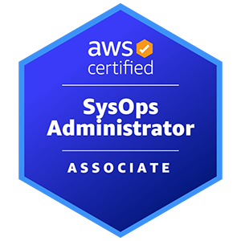

<!-- Career Pathways Modal -->
<div
  id="careerModal"
  onclick="if(event.target===this) closeModal('careerModal')"
  class="hidden fixed inset-0 bg-black bg-opacity-50 flex justify-center items-center"
>
  <div class="bg-gray-800 p-6 rounded w-11/12 md:w-3/4 relative">
    <button
      onclick="closeModal('careerModal')"
      class="absolute top-2 right-2 text-xl text-gray-200"
    >
      &times;
    </button>

    <h2 class="text-2xl font-extrabold text-cyan-400 mb-4 text-center">
      Career Pathways
    </h2>

    <div class="flex flex-col md:flex-row gap-6">
      <!-- DevOps Engineer -->
      <div class="flex-1 flex flex-col justify-between text-center">
        <div>
          <h3 class="text-xl font-semibold mb-2 text-white">DevOps Engineer</h3>
          <p class="text-sm text-gray-300 leading-relaxed">
            Learning about automation and modern DevOps practices has been a
            really pleasant surprise — it’s powerful, efficient, and a huge step
            up from the manual, legacy systems I was used to. I’d love to be in
            a role where I can keep building on this knowledge, pursue
            certifications, and keep improving my ability to design clean,
            reliable systems.
          </p>
        </div>
        <div class="flex justify-center gap-4 mt-4">
          
          
        </div>
      </div>

      <div class="border-t md:border-t-0 md:border-l border-purple-600"></div>

      <!-- Cloud Engineer -->
      <div class="flex-1 flex flex-col justify-between text-center">
        <div>
          <h3 class="text-xl font-semibold mb-2 text-white">Cloud Engineer</h3>
          <p class="text-sm text-gray-300 leading-relaxed">
            I just want to be part of this ecosystem — I love how clean and
            structured everything feels, from the service architecture to
            concepts like IAM and identity control. It’s technology I genuinely
            want to use day-to-day. I’m excited to keep building on this
            knowledge, pursue further certifications, and apply these skills in
            a real-world cloud engineering role.
          </p>
        </div>
        <div class="flex justify-center gap-4 mt-4">
          
          
        </div>
      </div>

      <div class="border-t md:border-t-0 md:border-l border-purple-600"></div>

      <!-- Full Stack Developer -->
      <div class="flex-1 flex flex-col justify-between text-center">
        <div>
          <h3 class="text-xl font-semibold mb-2 text-white">
            Full Stack Developer
          </h3>
          <p class="text-sm text-gray-300 leading-relaxed">
            I want to build full stack projects because it helps me understand
            how everything fits together. Working across the whole stack makes
            me better at every part of it — whether that's backend,
            infrastructure, or cloud. This website is a window into that
            learning journey — a place for me to build, experiment, and show
            that I'm always improving and adding new skills.
          </p>
        </div>
        <div class="flex justify-center gap-4 mt-4">
          
          
          
        </div>
      </div>
    </div>
  </div>
</div>
